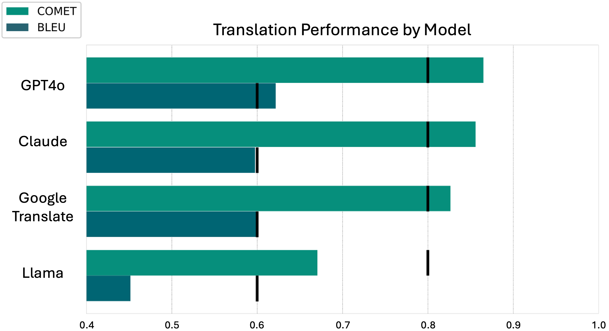

As part of my work at Faculty I developed a tool to identify where listed conservation areas differ from the nearby features present on a map. This will allow planning workers to identify potential errors in specified conservation area designations. An example is shown in the interactive map below, where cut off corners are identified.
We also created an embedding based search tool to correct important legal links across council webpages, achieving 95% top-3 accuracy. Investigate our code here.
We wrote a foundational civil service report investigating the use of LLMs for translation from English into a range of languages for effective communication of health related information. We evaluated the performance of a range of LLMs and languages, a snapshot of our results are shown below, click the button to switch between a bar chart and individual translation datapoints.
I worked with the Future of Humanity Institute in Oxford to investigate Inverse Reinfinement Learning (IRL) and improve efficiency via novel Bayesian approaches. Read more in our NeurIPS paper Toward Information Theoretic Active Inverse Reinforcement Learning.
I teach workshops on topics from basic python to fine-tuning LLMs. My most recent covers embeddings and LLM APIs width an interactive leaderboard for prompt engineering, found here. More foundational skills can be found here.